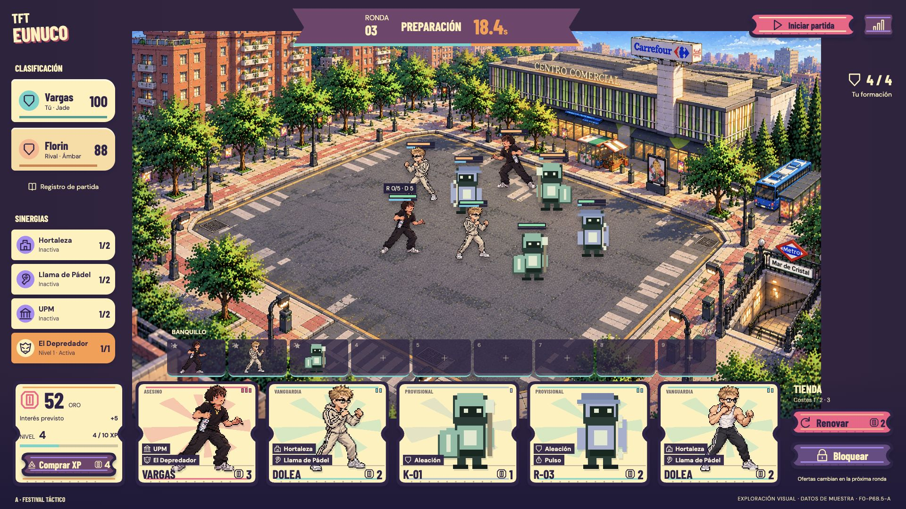
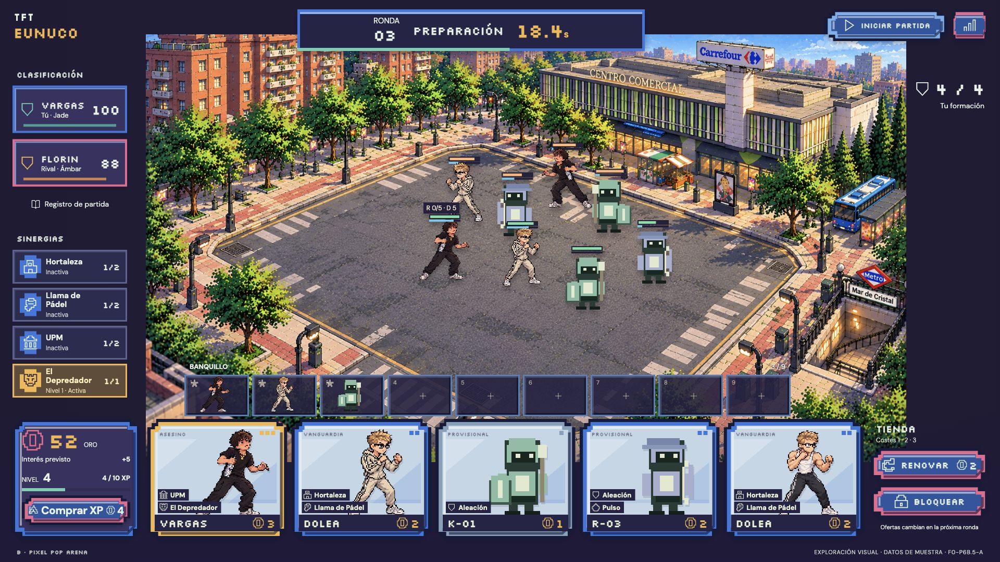
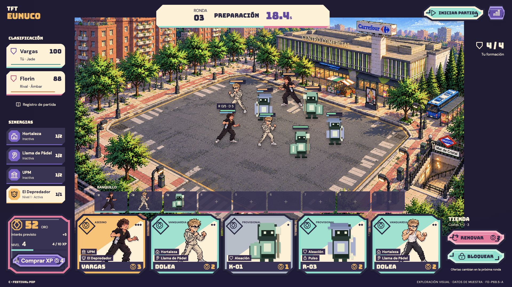

A · Festival Táctico
Entradas troqueladas, cintas de competición y esmaltes cálidos. La opción más social y expresiva; tipografía atlética y lectura directa.

Mismo escenario. Mismos personajes. Tres lenguajes artísticos desde sus fundamentos. Abre cada composición para verla a 1920×1080.
Entradas troqueladas, cintas de competición y esmaltes cálidos. La opción más social y expresiva; tipografía atlética y lectura directa.

Cartuchos de esmalte, cierres escalonados y píxeles en la iconografía. La opción más retro; coste y estado se reconocen con rapidez.

Medallones, juntas pixeladas y placas de cerámica partida. La opción más gráfica; alterna superficies claras y oscuras para ordenar decisiones.

Barlow Condensed + DM Sans
Naranja, coral, turquesa, violeta y marfil.
Troqueles curvos y pequeñas perforaciones.
Silkscreen + DM Sans
Azul, dorado, rosa, menta y violeta oscuro.
Escalones de 8 px y luces en cantos.
Bungee + DM Sans
Albaricoque, frambuesa, menta y amatista.
Remates asimétricos y campos diagonales.
Exploración aislada: los valores son muestras visuales y los controles económicos no ejecutan operaciones. Puedes abrir y cerrar el inspector desde los personajes del preview. Ninguna dirección está aprobada ni integrada. Captura de la interfaz actual · Comparativa razonada y límites